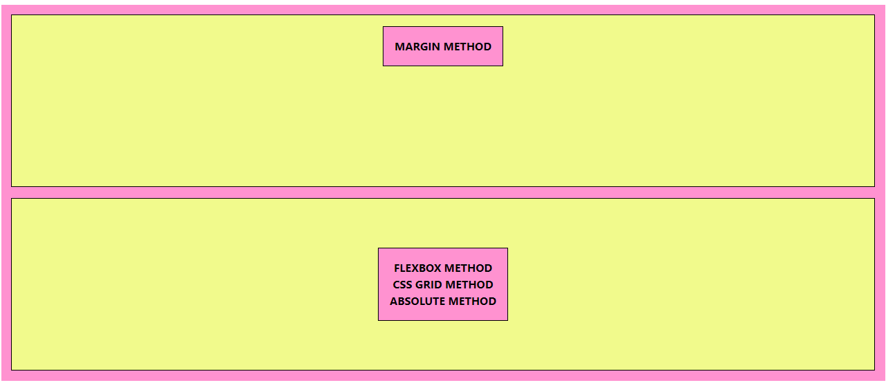

Centering element
/* Margin Method */
margin-inline: auto;
/* or */
margin: 0 auto;
/* Flexbox Method */
/* Parent Element */
display: flex;
justify-contents: center;
align-items: center;
/* Now the Child Element will be centered */
/* CSS Grid Method #1 */
/* Parent Element */
display: grid;
justify-items: center;
align-items: center;
/* or */
place-items: center;
/* Now the Child Element will be centered */
/* Absolute Method */
position: absolute;
top: 50%;
right: 50%;
transform: translate(-50%, -50%);

max-width: 100%;
width: 480px; /* Specific size of width */
max-width: 100%; /* Preventing for overflow */
/* or use simplified method */
width: min(480px, 100%);
To prevent the element to overflow.
max-width is setting the maximum width.
min-content max-content
fit-content
.class-name {
/* MIN-CONTENT */
width: min-content;
}
min-content will shrink to the smallest it can possible
get, it's like parent-div make it as small as you can
make it without causing any line breaks.
.class-name {
/* MAX-CONTENT */
width: max-content;
}
max-content opposite of min-content means
there's no line breaks, so it will never shrink smaller than that.
.class-name {
/* FIT-CONTENT */
width: fit-content;
}
fit-content is sort of in between the
min-content and max-content where it will
hit that max content size, then if there's not enough room it allows
for line wraps.